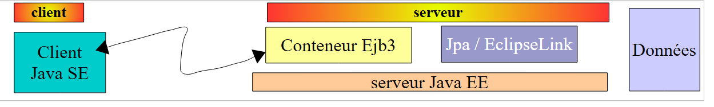
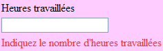

10. Versión 5 - Aplicación web PAM / JSF
10.1. Arquitectura de la aplicación
La arquitectura de la aplicación web PAM será la siguiente:
 |
En esta versión, el servidor GlassFish alojará todas las capas de la aplicación:
- la capa [web] está alojada en el contenedor de servlets del servidor (1 abajo)
- las demás capas [lógica de negocio, DAO, JPA] son alojadas por el contenedor EJB3 del servidor (2 abajo)
 |
Los componentes [lógica de negocio, DAO] de la aplicación que se ejecutan en el contenedor EJB3 ya se han implementado en la aplicación cliente/servidor descrita en la sección 7.1, que tenía la siguiente arquitectura:
 |
Las capas [de lógica de negocio y DAO] se ejecutaban en el contenedor EJB3 del servidor GlassFish, y la capa [UI] se ejecutaba en una aplicación de consola o Swing en otra máquina:
 |
En la arquitectura de la nueva aplicación:
 |
solo es necesario escribir la capa [web / jsf]. Las demás capas [business, DAO, JPA] ya están implementadas.
En el documento [ref3] se muestra que una aplicación web en la que la capa web se implementa con Java Server Faces tiene una arquitectura similar a la siguiente:
 |
Esta arquitectura implementa el patrón de diseño MVC (Modelo, Vista, Controlador). El procesamiento de una solicitud del cliente se lleva a cabo de la siguiente manera:
Si la solicitud se realiza mediante un GET, se ejecutan los dos pasos siguientes:
- solicitud: el navegador del cliente envía una solicitud al controlador [Faces Servlet]. El controlador gestiona todas las solicitudes del cliente. Es el punto de entrada de la aplicación. Es la C de MVC.
- respuesta: el controlador C indica a la página JSF seleccionada que se renderice. Esta es la vista, la V de MVC. La página JSF utiliza un modelo M para inicializar las partes dinámicas de la respuesta que debe enviar al cliente. Este modelo es una clase Java que puede recurrir a la capa [de negocio] [4a] para proporcionar a la vista V los datos que necesita.
Si la solicitud se realiza mediante un POST, se producen dos pasos adicionales entre la solicitud y la respuesta:
- solicitud: el cliente del navegador realiza una solicitud al controlador [Faces Servlet].
- procesamiento: el controlador C procesa esta solicitud. De hecho, una solicitud POST va acompañada de datos que deben procesarse. Para ello, el controlador cuenta con la ayuda de controladores de eventos específicos de la aplicación [2a]. Estos controladores pueden requerir la capa de negocio [2b]. Es posible que el controlador de eventos tenga que actualizar ciertos modelos M [2c]. Una vez procesada la solicitud del cliente, esta puede desencadenar diversas respuestas. Un ejemplo clásico es:
- una página de error si la solicitud no se ha podido procesar correctamente
- una página de confirmación en caso contrario
El gestor de eventos devuelve al controlador [Faces Servlet] un resultado de tipo cadena denominado clave de navegación.
- navegación: el controlador selecciona la página JSF (= vista) que se enviará al cliente. Esta selección se basa en la clave de navegación devuelta por el gestor de eventos.
- respuesta: la página JSF seleccionada envía la respuesta al cliente. Utiliza su modelo M para inicializar sus partes dinámicas. Este modelo también puede recurrir a la capa [de negocio] [4a] para proporcionar a la página JSF los datos que necesita.
En un proyecto JSF:
- el controlador C es el servlet [javax.faces.webapp.FacesServlet]. Se encuentra en la biblioteca [jsf-api.jar].
- Las vistas V se implementan mediante páginas JSF.
- Los modelos M y los controladores de eventos se implementan mediante clases Java a menudo denominadas «backing beans».
- En las versiones 1.x de JSF, las definiciones de beans y las reglas para navegar de una página a otra se definen en el archivo [faces-config.xml]. Este contiene la lista de vistas y las reglas para la transición de una a otra. A partir de la versión 2 de JSF, las definiciones de beans se pueden realizar mediante anotaciones, y las transiciones entre páginas se pueden codificar directamente en el código del bean.
10.2. Cómo funciona la aplicación
Cuando se solicita la aplicación por primera vez, aparece la siguiente página:
 |
A continuación, rellena el formulario y solicita el salario:
 |
Se muestra el siguiente resultado:
 |
Esta versión calcula un salario ficticio. No prestes atención al contenido de la página, sino a su diseño. Al hacer clic en el botón [Restablecer], volverás a la página [A].
Las entradas incorrectas se marcan, como se muestra en el siguiente ejemplo:
 |
10.3. El proyecto NetBeans
Crearemos una versión inicial de la aplicación en la que se simulará la capa [de negocio]. Contaremos con la siguiente arquitectura:
 |
Cuando los controladores de eventos o los modelos soliciten datos a la capa [de negocio] [2b, 4a], esta les proporcionará datos ficticios. El objetivo es obtener una capa web que responda correctamente a las solicitudes de los usuarios. Una vez logrado esto, solo quedará instalar la capa de servidor desarrollada en la sección 7.1:
 |
Esta será la versión 2 de la versión web de nuestra aplicación PAM.
El proyecto NetBeans para la versión 1 es el siguiente proyecto Maven:
 |
- en [1], los archivos de configuración
- en [2], las páginas XHTML y la hoja de estilo
- en [3], las clases de la capa [web]
- en [4], los objetos intercambiados entre la capa [web] y la capa [de negocio], y la propia capa [de negocio]
- en [5], el archivo de mensajes para la internacionalización de la aplicación
- en [6], las dependencias de la aplicación
Repasaremos algunos de estos elementos.
10.3.1. Archivos de configuración
El archivo [web.xml] es el que genera NetBeans de forma predeterminada, junto con la configuración de una página de excepción:
<?xml version="1.0" encoding="UTF-8"?>
<beans xmlns="http://www.springframework.org/schema/beans" xmlns:xsi="http://www.w3.org/2001/XMLSchema-instance"
xmlns:tx="http://www.springframework.org/schema/tx"
xmlns:jaxws="http://cxf.apache.org/jaxws"
xsi:schemaLocation="http://www.springframework.org/schema/beans
http://www.springframework.org/schema/beans/spring-beans-2.0.xsd
http://www.springframework.org/schema/tx
http://www.springframework.org/schema/tx/spring-tx-2.0.xsd
http://cxf.apache.org/jaxws
http://cxf.apache.org/schemas/jaxws.xsd">
<!-- Apache CXF -->
<import resource="classpath:META-INF/cxf/cxf.xml" />
<import resource="classpath:META-INF/cxf/cxf-extension-soap.xml" />
<import resource="classpath:META-INF/cxf/cxf-servlet.xml" />
<!-- lower layers -->
<import resource="classpath:spring-config-metier-dao.xml" />
<!-- web service -->
<bean id="wsMetier" class="pam.ws.PamWsMetier">
<property name="metier" ref="metier"/>
</bean>
<jaxws:endpoint id="wsmetier"
implementor="#wsMetier"
address="/metier">
</jaxws:endpoint>
</beans>
- línea 30: [index.html] es la página de inicio de la aplicación
- líneas 32-39: configuración de la página de excepción
La página [exception.html] se ha tomado de [ref3]. Su código es el siguiente:
Cualquier excepción que no sea gestionada explícitamente por el código de la aplicación web provocará que se muestre una página similar a la siguiente:
 |
El archivo [faces-config.xml] tendrá el siguiente contenido:
Ten en cuenta los siguientes puntos:
- Líneas 9–14: El archivo [messages.properties] se utilizará para la internacionalización de la página. Se podrá acceder a él en las páginas XHTML a través de la clave msg.
- Línea 15: define el archivo [messages.properties] como la fuente prioritaria para los mensajes de error mostrados por las etiquetas <h:messages> y <h:message>. Esto permite anular ciertos mensajes de error predeterminados de JSF. Esta función no se utiliza aquí.
10.3.2. La hoja de estilo
El archivo [styles.css] es el siguiente:
A continuación se muestran algunos ejemplos de código JSF que utilizan estos estilos:
| |
| |
|  |
10.3.3. El archivo de mensajes
El archivo de mensajes [messages_fr.properties] es el siguiente:
.libelle{
background-color: #ccffff;
font-family: 'Times New Roman',Times,serif;
font-size: 14px;
font-weight: bold
}
body{
background-color: #ffccff
}
.error{
color: #ff3333
}
.info{
background-color: #99cc00
}
.titreInfos{
background-color: #ffcc00
}
Todos estos mensajes se utilizan en la página [index.xhtml], excepto los de las líneas 11–15, que se utilizan en la página [exception.xhtml].
10.3.4. El ámbito de los beans
El bean [web.forms.Form] tendrá un ámbito de solicitud:
form.titre=Feuille de salaire
form.comboEmployes.libell\u00e9=Employ\u00e9
form.heuresTravaill\u00e9es.libell\u00e9=Heures travaill\u00e9es
form.joursTravaill\u00e9s.libell\u00e9=Jours travaill\u00e9s
form.heuresTravaill\u00e9es.required=Indiquez le nombre d'heures travaill\u00e9es
form.heuresTravaill\u00e9es.validation=Donn\u00e9e incorrecte
form.joursTravaill\u00e9s.required=Indiquez le nombre de jours travaill\u00e9s
form.joursTravaill\u00e9s.validation=Donn\u00e9e incorrecte
form.btnSalaire.libell\u00e9=Salaire
form.btnRaz.libell\u00e9=Raz
exception.header=L'exception suivante s'est produite
exception.httpCode=Code HTTP de l'erreur
exception.message=Message de l'exception
exception.requestUri=Url demand\u00e9e lors de l'erreur
exception.servletName=Nom de la servlet demand\u00e9e lorsque l'erreur s'est produite
form.infos.employ\u00e9=Informations Employ\u00e9
form.employe.nom=Nom
form.employe.pr\u00e9nom=Pr\u00e9nom
form.employe.adresse=Adresse
form.employe.ville=Ville
form.employe.codePostal=Code postal
form.employe.indice=Indice
form.infos.cotisations=Informations Cotisations sociales
form.cotisations.csgrds=CSGRDS
form.cotisations.csgd=CSGD
form.cotisations.retraite=Retraite
form.cotisations.secu=S\u00e9curit\u00e9 sociale
form.infos.indemnites=Informations Indemnit\u00e9s
form.indemnites.salaireHoraire=Salaire horaire
form.indemnites.entretienJour=Entretien / Jour
form.indemnites.repasJour=Repas / Jour
form.indemnites.cong\u00e9sPay\u00e9s=Cong\u00e9s pay\u00e9s
form.infos.salaire=Informations Salaire
form.salaire.base=Salaire de base
form.salaire.cotisationsSociales=Cotisations sociales
form.salaire.entretien=Indemnit\u00e9s d'entretien
form.salaire.repas=Indemnit\u00e9s de repas
form.salaire.net=Salaire net
El bean [web.utils.ChangeLocale] tendrá ámbito de aplicación:
import java.io.Serializable;
import javax.faces.bean.ManagedBean;
import javax.faces.bean.RequestScoped;
@ManagedBean
@RequestScoped
public class Form implements Serializable {
10.3.5. La capa [de negocio]
La capa [de negocio] implementa la siguiente interfaz IMetierLocal:
package web.utils;
import java.io.Serializable;
import javax.faces.bean.ManagedBean;
import javax.faces.bean.SessionScoped;
@ManagedBean
@SessionScoped
public class ChangeLocale implements Serializable{
// page locale
private String locale="fr";
public ChangeLocale() {
}
public String setFrenchLocale(){
locale="fr";
return null;
}
public String setEnglishLocale(){
locale="en";
return null;
}
public String getLocale() {
return locale;
}
public void setLocale(String locale) {
this.locale = locale;
}
}
Esta interfaz es la que se utiliza en el lado del servidor de la aplicación cliente/servidor descrita en la sección 7.1.
La clase Business que utilizaremos para probar la capa [web] implementa esta interfaz de la siguiente manera:
package metier;
import java.util.List;
import javax.ejb.Local;
import jpa.Employe;
@Local
public interface IMetierLocal {
// get your payslip
FeuilleSalaire calculerFeuilleSalaire(String SS, double nbHeuresTravaillées, int nbJoursTravaillés );
// list of employees
List<Employe> findAllEmployes();
}
Dejamos que sea el lector quien descifre este código. Fíjate en el método utilizado: para evitar tener que implementar la parte EJB de la aplicación, simulamos la capa [de negocio]. Una vez que se haya verificado que la capa [web] es correcta, podremos sustituirla por la capa [de negocio] real.
10.4. El formulario [index.xhtml] y su plantilla [Form.java]
Ahora crearemos la página XHTML del formulario y su modelo.
Lectura recomendada en [ref3]:
- Ejemplo #3 (mv-jsf2-03) para ver la lista de etiquetas que se pueden utilizar en un formulario
- Ejemplo n.º 4 (mv-jsf2-04) para ver las listas desplegables rellenadas por el modelo
- Ejemplo n.º 6 (mv-jsf2-06) para la validación de entradas
- Ejemplo n.º 7 (mv-jsf2-07) para gestionar el botón [Borrar]
10.4.1. Paso 1
Pregunta: Crea el formulario [index.xhtml] y su modelo [Form.java] necesarios para mostrar la siguiente página:
 |
Los componentes de entrada son los siguientes:
id | Tipo JSF | modelo | rol | |
comboEmpleados | <h:selectOneMenu> | String comboEmployeesValue List<Employee> getEmployees() | contiene la lista de empleados en el formato "nombre apellido". | |
horasTrabajadas | <h:inputText> | Cadena horasTrabajadas | número de horas trabajadas - número real | |
díasTrabajados | <h:inputText> | Cadena díasTrabajados | número de días trabajados - entero | |
btnSalario | <h:commandButton> | inicia el cálculo del salario | ||
btnReset | <h:commandButton> | restablece el formulario a su estado inicial |
- El método getEmployees devolverá una lista de empleados recuperados de la capa [business]. Los objetos mostrados por el cuadro combinado tendrán el atributo itemValue establecido en el número de la seguridad social del empleado y el atributo itemLabel establecido en una cadena que contiene el nombre y los apellidos del empleado.
- Los botones [Salario] y [Borrar] no estarán vinculados a controladores de eventos por el momento.
- Se comprobará la validez de los datos introducidos.

Prueba esta versión. En particular, comprueba que los errores de entrada se señalen correctamente.
Nota: Es importante que los atributos ID de los componentes de la página no contengan caracteres acentuados. Con Glassfish 3.1.2, esto provoca que la aplicación se bloquee.
10.4.2. Paso 2
Pregunta: Complete el formulario [index.xhtml] y su plantilla [Form.java] para que se muestre la siguiente página una vez que se haya pulsado el botón [Salary]:
 |
El botón [Salario] se conectará al controlador de eventos calculateSalary del modelo. Este método utilizará el método calculatePaystub de la capa [business]. Esta nómina se generará para el empleado seleccionado en [1].
En el modelo, la nómina estará representada por el siguiente campo privado:
package metier;
...
public class Metier implements IMetierLocal {
// employee dictionary indexed by n° SS
private Map<String,Employe> hashEmployes=new HashMap<String,Employe>();
// list of employees
private List<Employe> listEmployes;
// get your payslip
public FeuilleSalaire calculerFeuilleSalaire(String SS,
double nbHeuresTravaillées, int nbJoursTravaillés) {
// we retrieve employee n° SS
Employe e=hashEmployes.get(SS);
// we make a fiictive payslip
return new FeuilleSalaire(e,new Cotisation(3.49,6.15,9.39,7.88),new ElementsSalaire(100,100,100,100,100));
}
// list of employees
public List<Employe> findAllEmployes() {
if(listEmployes==null){
// create a list of two employees
listEmployes=new ArrayList<Employe>();
listEmployes.add(new Employe("254104940426058","Jouveinal","Marie","5 rue des oiseaux","St Corentin","49203",new Indemnite(2,2.1,2.1,3.1,15)));
listEmployes.add(new Employe("260124402111742","Laverti","Justine","La brûlerie","St Marcel","49014",new Indemnite(1,1.93,2,3,12)));
// employee dictionary indexed by n° SS
for(Employe e:listEmployes){
hashEmployes.put(e.getSS(),e);
}
}
// we return the list of employees
return listEmployes;
}
}
que tiene métodos get y set.
Para recuperar la información contenida en este objeto, puedes escribir expresiones como las siguientes en la página JSF:
private FeuilleSalaire feuilleSalaire;
La expresión del atributo «value» se evaluará de la siguiente manera:
[form].getPayrollSheet().getEmployee().getName(), donde [form] representa una instancia de la clase [Form.java]. El lector puede comprobar que los métodos get utilizados aquí existen efectivamente en las clases [Form], [PayrollSheet] y [Employee], respectivamente. Si no fuera así, se lanzaría una excepción al evaluar la expresión.
Pruebe esta nueva versión.
10.4.3. Paso 3
Pregunta: Complete el formulario [index.xhtml] y su plantilla [Form.java] para obtener la siguiente información adicional:
 |
Seguiremos el mismo enfoque que antes. Hay un problema con el símbolo de la moneda del euro que aparece en [1], por ejemplo. En una aplicación internacionalizada, sería preferible utilizar el formato de visualización y el símbolo de la moneda de la configuración regional seleccionada (en, de, fr, ...). Esto se puede lograr de la siguiente manera:
<h:outputText value="#{form.feuilleSalaire.employe.nom}"/>
Podríamos haber escrito:
<h:outputFormat value="{0,number,currency}">
<f:param value="#{form.feuilleSalaire.employe.indemnite.entretienJour}"/>
</h:outputFormat>
pero con la configuración regional en_GB (inglés británico), el importe seguiría mostrándose en euros cuando debería estar en libras (£). La etiqueta <h:outputFormat> permite mostrar la información en función de la configuración regional de la página JSF que se muestra:
- línea 1: muestra el parámetro {0}, que es un número que representa una cantidad monetaria
- línea 2: la etiqueta <f:param> asigna un valor al parámetro {0}. Una segunda etiqueta <f:param> asignaría un valor al parámetro denominado {1}, y así sucesivamente.
10.4.4. Paso 4
Lectura recomendada: Ejemplo n.º 7 (mv-jsf2-07) en [ref3].
Pregunta: Completa el formulario [index.xhtml] y su plantilla [Form.java] para gestionar el botón [Reset].
El botón [Reset] restaura el formulario al estado en el que se encontraba cuando se solicitó por primera vez mediante una solicitud GET. Aquí hay varios retos. Algunos se han explicado en [ref3].
El formulario devuelto por el botón [Raz] no es el formulario completo, sino solo la parte que se ha rellenado:

Este resultado se puede lograr utilizando una etiqueta <f:subview> de la siguiente manera:
<h:outputText value="#{form.feuilleSalaire.employe.indemnite.entretienJour} є">
La etiqueta <f:subview> engloba toda la parte del formulario que se puede mostrar u ocultar. Cualquier componente se puede mostrar u ocultar utilizando el atributo rendered. Si rendered="true", el componente se muestra; si rendered="false", no se muestra. Si el atributo rendered toma su valor del modelo, entonces la visualización del componente se puede controlar mediante programación.
En el ejemplo anterior, controlaremos la visualización de la vista viewInfos utilizando el siguiente campo:
<f:subview id="viewInfos" rendered="#{form.viewInfosIsRendered}">
... la partie du formulaire qu'on veut pouvoir ne pas afficher
</f:subview>
junto con sus métodos get y set. Los métodos que gestionan los clics en los botones [Salario] y [Borrar] actualizarán este valor booleano dependiendo de si la vista viewInfos debe mostrarse o no.